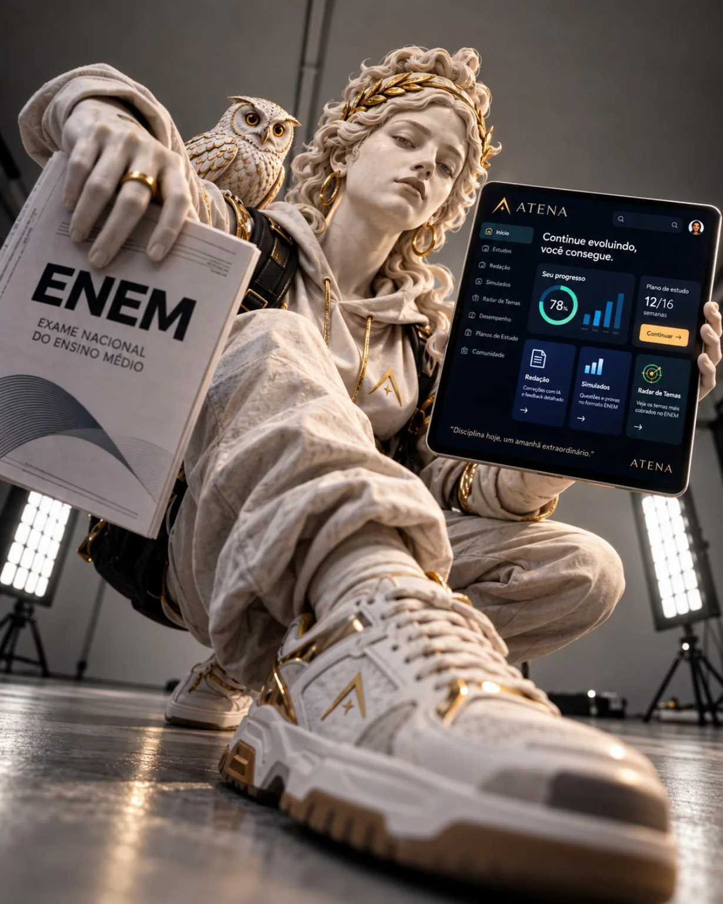

ATENA / ENEM 2026
Seu próximo capítulo começa aqui.
Um pouco de foco hoje. Mais possibilidades amanhã.
SABEDORIA ANTIGA. AMBIÇÃO NOVA.Conhecimento
Conhecimento
é poder.
Faça dele o seu.
Da primeira questão à redação que você tem orgulho de escrever. Tudo em um lugar, no seu ritmo.
GratuitoSem cadastroCódigo aberto

✦ A sabedoria abre caminhos.
Pratique problemas e explique o raciocínio
Uma atividade curta, um avanço concreto. Você escolhe quando começar.
Vamos nessaCONSTÂNCIA, SEM PRESSÃO
Sua meta semanal
0%
0 de 5 dias
Seu primeiro dia pode ser hoje.
S
T
Q
Q
S
S
D
Uma tese.
Mil possibilidades.
Explore 17 temas, compare argumentos e desenvolva uma intervenção com propósito.
Entrar no estúdioO SEU ARSENAL DE CONHECIMENTO
Escolha por onde começar.Menos abas. Mais aprendizado.
01
Trilhas de estudo
Aprenda um conceito. Coloque em prática.
02
Estúdio de redação
Da primeira ideia à sua melhor versão.
03
Simulados
Treine o raciocínio e a gestão do tempo.
04
Radar de temas
Atualidades, fontes e caminhos para escrever.
05
Biblioteca de PDFs
Cadernos autorais e materiais oficiais.
06
Revisão ativa
Cartões, intervalos e o seu caderno de erros.
UM PASSO DE CADA VEZ
Sua semana, com direção.
seg., 05/10 · Matemática
Pratique problemas e explique o raciocínio
25 min · no seu ritmoter., 06/10 · Redação
Construa uma tese e dois argumentos
25 min · no seu ritmoqua., 07/10 · Matemática
Pratique problemas e explique o raciocínio
25 min · no seu ritmoqui., 08/10 · Natureza
Conecte um conceito a uma questão
25 min · no seu ritmosex., 09/10 · Humanas
Relacione contexto, fonte e interpretação
25 min · no seu ritmo0/5 blocos concluídos
Seu estudo não precisa de sinal.
Um arquivo com o Hub, o estúdio de redação, suas ferramentas e quatro PDFs autorais. Baixe e abra no navegador.
Levar a ATENA comigoFontes e provas oficiais externas abrem com internet. Os dados ficam no navegador; use o backup para transferir.